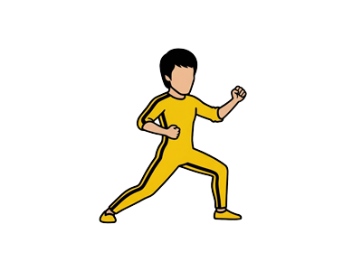
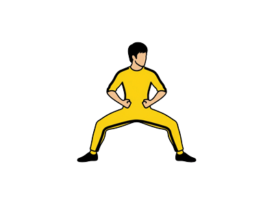
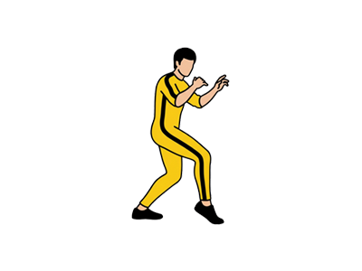
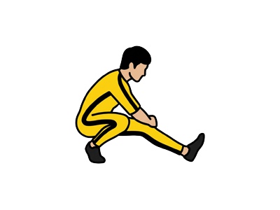
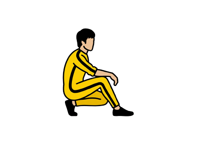
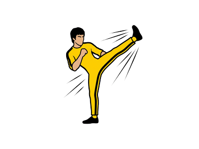
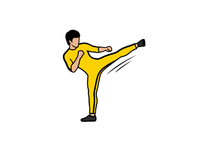
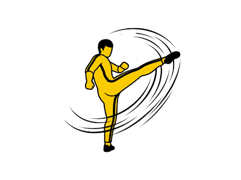
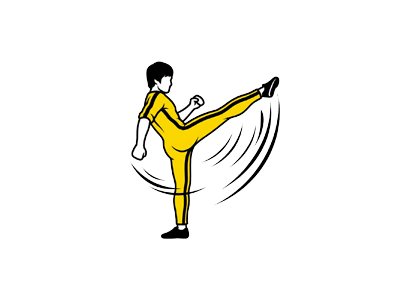

五大基本步型
步型是武术下肢相对静止的定型姿态，是构成武术动作的稳定基础。通过双腿与脚的空间组合形成五类基本结构，是下盘力量与稳定性的核心训练。
弓步 Bow Stance (Gong Bu)
武术中最常用的步型，因姿势与步兵拉弓时相同而得名，主要作用是发力。
- 前腿屈膝，大腿接近水平，膝与脚尖垂直
- 后腿蹬直，脚尖内扣斜向前方
- 上体正对前方，重心落于两腿之间
- 常见错误：前膝超过脚尖、后腿弯曲
马步 Horse Stance (Ma Bu)
下肢力量的基石，是考验腿部力量与耐力的核心步型。
- 双脚间距约为本人脚长的三倍
- 脚尖平行向前，膝关节弯曲呈90°
- 大腿接近水平，臀部微收不后撅
- 挺胸塌腰，重心落于两腿正中
虚步 Empty Stance (Xu Bu)
虚实转换的关键步型，前脚虚点地面，重心落于后腿。
- 后腿屈膝半蹲，支撑全身重量
- 前脚脚尖点地，脚跟提起
- 前腿虚，后腿实，重心在后
- 上体微前倾，目视前方
仆步 Servant Stance (Pu Bu)
一腿全蹲一腿伸直的步型，对髋关节柔韧性要求较高。
- 一腿全蹲，大腿与小腿贴紧
- 另一腿伸直平仆，脚尖内扣
- 上体微前倾，重心偏于全蹲腿
- 常用于扫腿、穿掌等动作
歇步 Rest Stance (Xie Bu)
两腿交叉、一膝贴地的步型，是低姿势转换的过渡步型。
- 两腿交叉，一腿全蹲
- 前脚全掌着地，脚尖外展
- 后脚前脚掌着地，膝部贴于前腿小腿外侧
- 臀部坐于后腿脚跟处
五大步型结构示意图





四大核心腿法
腿法是武术套路技术的重要组成部分，通过踢腿训练可有效提升腿部柔韧性、爆发力和控制能力。四种基本腿法是直摆性腿法的核心。
正踢腿 Front Kick (Zheng Ti Tui)
腿法训练的基础动作，要求腿直、勾脚、踢高，是测试腿部柔韧性的标准动作。
- 支撑腿伸直，五趾抓地
- 摆动腿脚尖勾起，向前额猛踢
- 踢腿时上体保持正直，不可前倾
- 落腿要轻，控制重心稳定
侧踢腿 Side Kick (Ce Ti Tui)
向身体侧方踢起的腿法，对髋关节外展能力要求较高。
- 支撑腿伸直，脚尖外展
- 摆动腿向同侧耳际猛踢
- 脚尖勾起，脚外侧朝上
- 上体侧倾，但不可过度
里合腿 Inward Swing Kick (Li He Tui)
直摆性腿法，腿由外向内弧形摆动，膝关节保持挺直。
- 支撑腿伸直，保持稳定
- 摆动腿向异侧踢起，经面前向里合
- 脚尖勾起，膝关节伸直
- 幅度要大，呈扇形摆动
外摆腿 Outward Swing Kick (Wai Bai Tui)
与里合腿相反，腿由内向外弧形摆动，同样要求膝关节挺直。
- 支撑腿伸直，五趾抓地
- 摆动腿向同侧踢起，经面前向外摆
- 脚尖勾起，力达脚外侧
- 摆幅要大，呈扇形展开
四大腿法动作轨迹示意图




科学修炼方法
武术基本功的修炼需要循序渐进，遵循科学的训练原则，从柔韧性、力量、协调性三个维度系统提升。
📋 训练阶段规划
第一阶段：基础期（1-3个月）
- 每日压腿：正压、侧压、后压各3组，每组30秒
- 步型静力训练：马步、弓步各1-3分钟
- 踢腿练习：每种腿法左右各10次
- 目标：建立基本柔韧性，掌握动作要领
第二阶段：强化期（3-6个月）
- 增加踢腿高度和速度要求
- 步型配合手法练习
- 加入跳跃动作：飞脚、旋风脚等
- 目标：提升爆发力，动作规范到位
第三阶段：巩固期（6个月以上）
- 套路组合练习，步型腿法连贯运用
- 增加难度：控腿、平衡动作
- 对抗性训练：条件实战
- 目标：形成肌肉记忆，运用自如
每日训练建议时长
- 初学者：30-45分钟
- 进阶者：60-90分钟
- 专业训练：2小时以上
- 建议早晚各一次，效果更佳
⚠️ 训练要点提示
训练前必须充分热身，特别是髋关节、膝关节和踝关节；踢腿时脚尖务必勾起，力达脚尖；步型训练注意膝盖与脚尖方向一致，避免膝关节损伤；训练后要做拉伸放松，促进恢复。循序渐进，切勿急于求成。
进阶技术路线
掌握基本功后，可向更高难度的技术进阶，包括跳跃腿法、旋转腿法、平衡动作等。
跳跃腿法
在基本功基础上加入腾空动作，提升爆发力和空中控制能力。
- 飞脚：腾空外摆腿击响
- 旋风脚：腾空转体360°+外摆
- 腾空摆莲：腾空转体+外摆击响
- 前提：基本功扎实，弹跳力达标
平衡动作
单腿支撑的高难度静态动作，考验核心稳定性和专注力。
- 提膝平衡：一腿直立，一腿屈膝提起
- 燕式平衡：上身前俯，后腿后举
- 仰身平衡：上身后仰，一腿前举
- 要点：目视固定点，呼吸均匀
器械配合
将步型腿法与器械套路结合，提升实战应用能力。
- 刀术：结合步型的劈砍动作
- 剑术：配合虚步的点刺
- 枪术：弓步扎枪发力
- 棍术：马步格挡与扫棍
安全修炼指南
武术修炼安全第一，了解常见损伤预防和处理方法，确保长期可持续训练。
常见损伤预防
了解训练中的风险点，提前预防。
- 膝关节：避免膝盖超过脚尖，保持正确步型
- 腰部：核心收紧，避免过度扭转
- 踝关节：落地缓冲，避免内翻
- 肌肉拉伤：充分热身，循序渐进
训练环境要求
选择合适的训练场地和装备。
- 场地：平整、防滑、有足够空间
- footwear：平底武术鞋或赤脚
- 服装：宽松舒适，便于活动
- 温度：避免极寒极热环境训练
损伤应急处理
掌握基本的运动损伤处理原则。
- 急性损伤：RICE原则（休息、冰敷、加压、抬高）
- 肌肉酸痛：热敷、按摩、适当休息
- 关节扭伤：立即停止训练，就医检查
- 慢性疼痛：调整训练量，寻求专业指导